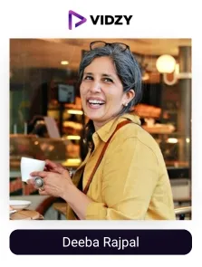
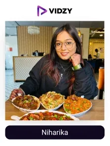

Indian cuisine is known all over the world for its bold spices, rich aromas, and incredibly diverse recipes passed down through generations. As we move from one region to another, the flavors change dramatically, reflecting India’s diversity and cultural richness.
Here, more than just a meal, food is an emotion. It’s about spending quality time together with family, laughing with friends, and making special memories with the near and dear ones. People love trying new dishes at restaurants and hotels, exploring different tastes, and enjoying the whole experience together.
This deep connection to food is one of the reasons why the Indian food industry continues to grow rapidly. With more people exploring new flavours and eager to experience the richness of Indian cuisine, the industry is seeing remarkable growth. It is growing at an incredible pace, with a revenue projected to be approximately USD 887.77 billion in 2025.
With this exceptional growth, the way people discover and experience food is also changing. Whether it is finding the delicious food on the street, cooking mouth-watering food at home, to making unforgettable joyful movements with family and loved ones. Food UGC content creators in India are the food trend setters; they share new viral recipe videos to restaurant reviews, and street food explorations, inspiring people to explore new flavors, uncover hidden gems, and experiment with their food choices.
Their content not only introduces audiences to new flavors and trends but also significantly influences their purchasing behavior. By creating relatable and trustworthy content, they help food businesses connect with audiences in a relatable and trustworthy manner, building credibility and influencing their purchasing decisions, making them valuable partners for food brands.
As the leading UGC company in India, we have researched the list of top food UGC creators in India, who can build food brands' trust, increase engagement, and awareness. Now let’s explore who are food UGC creators are, and the list of top food UGC creators in India.
Who Are Food UGC Creators?
Food UGC creators are individuals who create and share authentic food-related content such as viral recipes, restaurant reviews, cooking tips, and product recommendations, across social media platforms.
Their engaging storytelling and authentic reviews help audiences discover new flavours, explore hidden food spots, and make better food choices.
Food UGC creators in India, with their real-life experiences and honest opinions, help the audience connect with food brands in a personal way, thereby boosting their credibility in the market. For food brands with a pragmatic vision, collaborating with credible food UGC creators is an effective way to reach the right consumers, turn engagement into loyalty, and reap impactful results.
Top Food UGC Creators in India
Contents
-
1. Sarah Hussain
Channel: @zingyzest
Followers: 777KEngagement Rate: 2.19%About The Influencers-
Sarah is a popular food UGC creator, well known for her consistent and quality content. She loves exploring delicious street food and sharing a variety of restaurant reviews and mouth-watering food. She was recognised as a Cosmopolitan Food UGC creator in 2024 and listed among Forbes' Top 100 Creators 2024.
She also explores different cities, sharing her foodie adventures along the way. Besides food, she showcases her travels, lifestyle updates, and even runs her jewelry brand, @shopouterbeauty.
-
2. Pavitra Kaur
Channel: @theclassyfoodophile
Followers: 547KEngagement Rate: 2.18%About The Influencers-
Pavitra’s Instagram feed is all about making food an experience. From street food delights to gourmet meals, she brings amazing flavours to her followers, tantalising their taste buds with her vibrant and informative content.
She is also the proud owner of theclassykitchen. Shop, where she offers her best recommendations on kitchen essentials and cooking tools. She believes in exploring the world through food without worrying about calories. She travels to different places, trying new dishes and sharing her experiences with her followers.
-

3. Deeba Rajpal
Channel: @passionateaboutcooking
Followers: 819KEngagement Rate: 2.79 %About The Influencers-
Deeba is a food content creator who loves sharing her love for food. She is also an amazing photographer. She was awarded Forbes India’s Top 100 Digital Stars 2024. Her Instagram feed is the perfect place for eggless dessert recipes and alluring food pics, a perfect paradise for dessert lovers.
She also shares her easy recipes and baking tips via her blog called Passionate About Baking. She wants to make baking simple and fun for everyone, especially for those who prefer eggless desserts.
-
4. Ritika Jaiswal
Channel: Kolkatafoodie
Followers: 98.2KEngagement Rate: 8.80%About The Influencers-
Ritika is a pastry chef and food lover who shares her love for food and travel on Instagram. Her page is full of delicious dishes, different restaurant reviews, and her exciting travel stories.
She explores every corner of Kolkata to find the best tastes and diverse food choices. As a pastry chef, she also shares baking tips and recipes with her followers.
Ritika also shares her travel experiences of experiencing different cultures and cuisines. She has created a loving community of food and travel enthusiasts.
-
5. Govind P
Channel: keralafoodie
Followers: 530KEngagement Rate: 5.53%About The Influencers-
Govind is a food and travel lover from Kerala. He shares his love for Kerala’s amazing food and culture via his Instagram. His content also includes new food trends, exploring local hidden food corners, bringing them to followers to try and enjoy. He also shares his travel experiences, exploring different places and sampling local cuisines.
His amazing presentation with beautiful pictures and engaging stories makes his followers feel like they are part of the journey. Govind’s passion for food and travel has made him a trusted food content creator.
-
6. Chef Kirti Bhoutika
Channel: @kirtibhoutika
Followers: 608KEngagement Rate: 1.56%About The Influencers-
Kirti is a talented pastry chef from Kolkata. She had won MasterChef India Season 5 in 2016. She shares easy and delicious recipes, cooking tips, and glimpses into her daily life. Her goal is to make cooking fun and accessible for everyone.
Kirti owns Sugarplum Cakery, a bakery to share her love for baking with her followers. Other than baking, she is involved in Kaizen Cold Brew, showing her love for different kinds of food and drinks. She has a simple and easy way of sharing her cooking videos, which inspires her audience to try their hands at different delicacies.
-
7. Aarti Madan
Channel: @aartimadan
Followers: 1MEngagement Rate: 1.25%About The Influencers-
Aarti Madan is a pastry chef and food creator from Pune. After working in advertising for eight years, she followed her passion for cooking and trained with The Oberoi Hotel group and Le Cordon Bleu.
She shares her simple and delicious recipes with her followers and helps them experiment with their cooking skills at home with ease. She teaches step-by-step recipes in a proper and detailed way, making cooking fun and easy for everyone. Her content shows her love and inspires others to try new dishes and enjoy homemade meals.
-

8. Niharika
Channel: foodieniks
Followers: 82.3KEngagement Rate: 101.25%About The Influencers-
Niharika is a food and lifestyle influencer from Prayagraj. She shares a variety of food, from traditional Indian dishes to popular street foods, giving her followers a taste of the local cuisine. She also shares engaging reels, such as her experience of satisfying noodle cravings with a spicy twist was loved by many.
She makes it a point that her content is both engaging and informative. Niharika has partnered with many brands like Bregano and Nandi. Her delicious recipes, engaging reels and food reviews make her an admired food content creator in India.
-
9. Saloni Kukreja
Channel: @salonikukreja
Followers: 958KEngagement Rate: 1.49%About The Influencers-
Saloni Kukreja is a chef, entrepreneur, and food content creator. She is also building @induicecream, a brand in the food industry. Her creative and engaging content inspires people to try new dishes and explore different flavors.
Saloni Kukreja travels to different places and countries and tries various foods, and shares her delicious experiences with her followers. She explores street food, cafes, and restaurants, giving her followers a taste of the best dishes from each city.
-
10. Padhu Sankar
Channel: padhuskitchen
Followers: 64.8KEngagement Rate: 1.84%About The Influencers-
Padhu is a famous food influencer who shares her love for food and sustainability via her Instagram handle. She is also a well-known YouTuber, whose videos are a delight to watch. She is the founder of Padhuskitchen.com. She always shares healthy and simple cooking recipes. Her content is mostly focused on preparing easy-to-make, nutritious meals, sharing with her followers that healthy meals need not be complicated or time-consuming.
Her cooking videos are clear and carry detailed explanations of each step that make her recipes easy to understand for both beginners and experienced home cooks. Her simple meal preparation, one-pot dishes, and traditional Indian food inspire home cooks everywhere.
Conclusion:
In India, food UGC creators are changing the way we discover and enjoy food. With their creative recipes, local food discoveries, and engaging content, they bring flavors to life and inspire food lovers across the country.
By sharing their amazing food experiences, honest reviews on eateries, and engaging cooking content, they help food-related brands to connect with their audience in a relatable and much impactful way. This way, by building trust and vibrant food-loving communities, they influence consumer choices regarding engaging with the brand.
That’s why top food brands in India are partnering with the best food UGC creators through Vidzy, utilising their authenticity to build strong connections, boost engagement, and drive sales.
Want to take your brand to the next level? Reach out today and watch your brand grow!